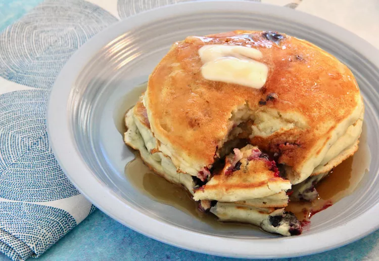

Lemon-Blueberry Pancakes

Description
One word for these lemon-blueberry pancakes ... delicious! Serve with butter and real maple syrup.
Ingredients
- 1 ¼ cups all-purpose flour
- 1 tablespoon baking powder
- 1 teaspoon white sugar
- ½ teaspoon salt
- 1 cup milk
- 1 egg
- ½ tablespoon butter, melted and slightly cooled
- 1 lemon, zested
- 2 teaspoons oil, or as needed
- 1 cup frozen blueberries, or as needed, thawed
Steps
- Sift together flour, baking powder, sugar, and salt in a large bowl.
- Whisk together milk and egg in a small bowl. Add milk and egg mixture to flour mixture, whisking until blended. Stir in melted butter and lemon zest.
- Lightly oil a griddle and heat over medium-high heat. Fill a 1/4-cup measure with batter and pour onto the hot griddles.
- Drop a few blueberries on top and cover them with a little batter. Cook until bubbles form and the edges are dry, 3 to 4 minutes.
- Flip and cook until browned on the other side, 2 to 3 minutes. Repeat with remaining batter.
Back to list of recipes